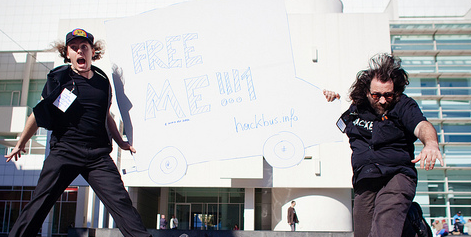
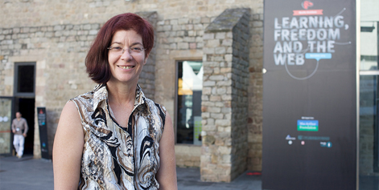

LEARNING, FREEDOM, AND THE WEB:
The Convergence
Barcelona, Fall 2010:
Learning and the Web. Two powerful forces of change converge in a public square. Their dimensions are unpredictable, and many of the outcomes of their convergence will be unintended, but this experiment is not entirely uncontrolled. This group of scholars, hackers, and activists has calculated the likely conditions, wired in all the right connections. When lightning strikes, they’ll be ready.
Learning: The natural process of acquiring knowledge and mastery.
As a journalist, I’ve spent the last three years covering a change in the world of education. Seismic waves are rumbling from the basement of the ivory tower and the schoolhouse down your block. The demand for access to both existing and new models of learning is rising as uncontrollably as the average temperature throughout the globe. Our society faces serious existential threats, and the answers aren’t written in books. So there’s a growing urgency to shift toward models of learning that foster natural creativity and innovation to produce new knowledge, new answers. Yet the educational ecosystem is edging toward collapse—50 million university students in 2000 will become an estimated 250 million by 2025, even as educational costs rise at two to three times the rate of inflation. An estimated 400 million children around the world have too little access to formal schooling. No government in the world has a plan to fix this.
Meanwhile, informal learning–the kind we do all day every day, as long as our eyes are open and we’re not in school–is going through a Cambrian explosion in hackerspaces, libraries, museums, basements and garages. “How-to” is one of the top searches on Google. An entire generation of web geeks is functioning more or less self-taught, because traditional curricula can’t keep up with the skills they need.
All of which brings me to the second force, now arcing overhead—an invisible mesh of electrical signals that connect the people in this square not only to each other, but the world.
{kind=link}
The Web: A set of building blocks that anyone can use to invent, build, connect, and bend things in the digital world.
Twenty-five years ago, computer engineers Tim Berners-Lee and Robert Caillou first introduced their creation: “The World Wide Web was developed to be a pool of human knowledge and human culture, which would allow collaborators in remote sites to share their ideas and all aspects of a common project.” Today, the web’s open and interoperable standards make it possible for 1.75 billion people around the world to build, access, connect, and alter 240 million unique sites, not to mention for millions of people to create and upload 35 hours of video to YouTube, the most popular video site, every minute. The web allows for the creation of wealth, beauty, and human connection on an unprecedented scale.
Yet, as more and more of us live, work, create, socialize, shop, bank, and, yes, learn online, the architects of the web are increasingly drawing the parameters of private and public life, and often for corporate profit or political control rather than public benefit.
The very principle that has made the web so vast and so powerful—the open structure, held in common, that allows anyone to access and contribute—is under threat as never before.
The threat is hydra-headed: zealous enforcement of copyright and intellectual property, governments that stifle dissent by disabling servers or censoring keywords, the increasing trade in personal data, legal and illegal infringements on privacy, and public discourse and private relationships that are increasingly funneled through a very small number of commercial web platforms. The response is to assert freedom.
{kind=link}
Freedom: to access, remix, copy, and share knowledge — basic to learning, and the basis of the web.
In the stories I’ve been telling about the future of learning and the web, freedom is the missing link. That’s what I started to realize last summer when Philipp Schmidt, of Peer 2 Peer University, put me in touch with Mark Surman, executive director of the Mozilla Foundation. Surman invited me to be a part of the first Mozilla “Learning, Freedom, and the Web” Festival.
Mozilla, as I was then dimly aware, is a giant nonprofit open source software project. Together, thousands of people, employees but mostly volunteers, create Firefox (the second biggest web browser by market share), which is used by 400 million people worldwide. This is open source–a new way of organizing creative work with broad participation, all enabled by transparency. And the work has built a worldwide alliance of people dedicated to keeping a part of the web transparent, held in common, and freely remixable by individuals. Oh yeah—and awesome.
Mitchell Baker, Mozilla's founder and “chief lizard wrangler,” never takes a stage without thanking the volunteers that make it all possible.
{kind=link}
As she explained onstage in Barcelona:
Mozilla is about trying to build a part of the web that allows individuals to move from consumption to creation. We’re nonprofit not because it’s easy, but because it represents what we’re trying to do. The Internet is so important that we believe that part of it should be a public asset.
Their successes in open-source led Mozillians to ask:
What else can openness do? Beyond the realm of hackers, programmers and developers, who are our natural allies? Who else believes in openness, innovation, sharing, democracy, participation, and preserving culture as a public asset? And who can be convinced to fight for it?
There are many possible answers to that question: journalists, artists, filmmakers, and political activists, to name but a few. The decision to start by rallying the avant-garde of teachers, scholars, and learners was by no means arbitrary. There is alchemy in the meanings and meetings of Learning, Freedom, and the Web:
LearningXFreedom: Learning happens naturally when individuals pursue their passions among peers and guides. Restrictions on learning—red tape, time, place, cost, or others—should be minimized so more people around the world are free to join together to face hard problems and learn new things in new ways.
WebXLearning: The web can lower barriers, cut costs, blow open access to knowledge. It enables—and demands—new models of teaching, learning, assessment, and accreditation.
FreedomXWeb: The public, open, participatory, transparent, remixable nature of the web has been integral to its growth and must be revealed, defended, celebrated. If it’s not open all the way down, it’s not the web.
LearningXFreedomXWeb Learning: will be more agile, more active, more participatory, more like the web. The web will strengthen its public mission and its place in human history. Everyone gets to invent his or her own end to the story.
These overlapping definitions set forth ideals have yet to be fully realized or safely established. Which is fortunate, because working and creating together is, generally speaking, the best way to form relationships, to build communities, and, yes, to learn.
So here’s the Mozilla Festival formula for catching lightning: throw together educators and techies, both committed to innovation in the public interest; guzzle coffee, snarf tapas, chat, and make friends; but also, actually make stuff using open-source technology. The goal is to develop new tools and practices that can supplement, optimize, and/or replace the traditional trappings of the education system, from diplomas and textbooks to lectures and lesson plans–the better to serve learners’ needs.
And amidst the code sprints, why not brainstorm a wish list, too: What tools remain to be developed to allow learners of all ages to form the questions, find or create the answers, build skills, and participate in communities? What allies and teams need to form to make these things happen?
Finally, if successful, the manifesto of two days becomes the manifest of a much longer voyage:
A call for all those who care to spread webcraft literacy, to play with technology, to learn by making stuff together, to keep the web free by making it ourselves, to shape society through more democratic design, to pull learning out of the 15th or 19th century and into the 21st, to find strength in diversity, and to think critically about–and tell joyful stories about–all this doing and building and learning and making and sharing, all the better to get more people involved.
So lightning struck the clock tower, two worldviews faced each other in a public square, and “Learning, Freedom and the Web” was born.
Or, in the opening-night words of Mark Surman, as he shouted over the crowd, cheeks shining with sweat, in the high, echoey atrium of Barcelona’s Museum of Contemporary Art:
The future of the web and future of learning are intertwining. People here are creating that future.
I came to Barcelona to witness this experiment. I left as a participant. I hope that reading this will make you want to participate, too.
Chaordic!: Wikipedia: “a system of governance [that is] a harmonious coexistence of chaos and order.”
Collabtastic!: from a Drumbeat participant evaluation.
Check-out the Mozilla Drumbeat Science Fair